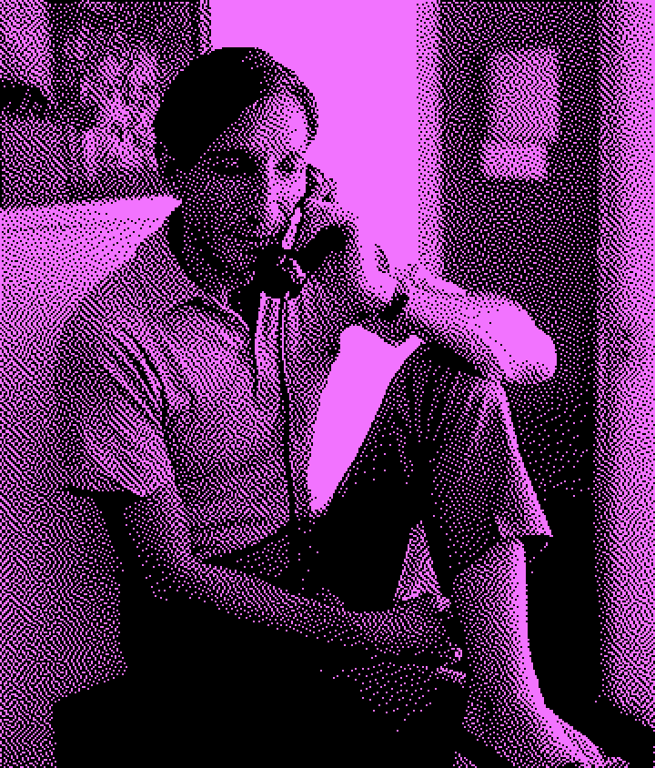

A talk at ASSETS '26 by Alex Lucas, on the paper The Qualities of Convivial Tools and Their Relevance to Music Software Accessibility by Alex Lucas, James Cunningham, Jacob Harrison, Franziska Schroeder and Andrew McPherson. ACM Transactions on Accessible Computing 18(3), 2025. doi.org/10.1145/3733606 (open access).
This page has every slide, a description of every image, and the full script.
assets '26 · queen's university belfast · imperial college london
The Qualities of Convivial Tools and Their Relevance to Music Software Accessibility. ACM TACCESS 18(3), 2025
Alex Lucas · James Cunningham · Jacob Harrison · Franziska Schroeder · Andrew McPherson
Script
Hello! I'm Alex Lucas from Queen's University Belfast. My slides are cream, with black text and strips of colourful pixel noise. I'll read or describe everything on them as I go. They're online now, with this script, at noiseguaranteed dot org slash assets26.
The title on screen is "Who makes music software accessible?" The paper is "The Qualities of Convivial Tools and Their Relevance to Music Software Accessibility", in TACCESS this year, with James Cunningham, Jacob Harrison, Franziska Schroeder and Andrew McPherson.
Slide 02 designers can't see the future
On the slide
Usability tests: a handful of people, for about an hour
But tools live in a busy world of people, places and things
"It isn't only that we use tools; we think with them." — Alva Noë
We can't fully anticipate how a tool will be used until it's in use.
Script
I'll start with a confession. Before academia, I designed music technology products, and design involves a lot of guessing. We run usability tests with a handful of people, for about an hour. But an hour can't show us how a tool will live in a busy world of people, places and things.
The slide quotes the philosopher Alva Noë: "It isn't only that we use tools; we think with them." And the bold line at the bottom says: we can't fully anticipate how a tool will be used until it's in use.
So when designers miss things, who fills the gaps?
Slide 03 20 sound creatives
On the slide
Three boxes of person icons, grouped by self-rated skill: 9 advanced, 9 intermediate, 2 beginners.
All blind or visually impaired · 9 countries · 2-hour interviews and demos
Script
To find out, we talked with twenty visually impaired and blind sound creatives: producers, composers, audio engineers, sound designers and beat makers, in nine countries.
Each two-hour session on Zoom began with an interview. Then people showed us a task of their choosing, like mixing stems or designing a sound effect for a game. Participants chose to be named in the paper. We used reflexive thematic analysis, and my co-author James, who is visually impaired, was involved at every stage.
The picture shows three boxes of person icons, by self-rated skill: nine advanced, nine intermediate, and two beginners.
Slide 04 three gaps
On the slide
A path from ‘starting out’ to ‘making music’, broken by three gaps labelled education, information and technology. An arched bridge filled with colourful pixel noise spans each gap, under the highlighted caption ‘bridged by community’.
"There is a lot of goodwill without the backup." — Peter Bosher
Script
We found three gaps. The picture shows a path, from "starting out" on the left to "making music" on the right, with a person icon at the start and a pair of musical notes at the end. The path is broken by three gaps, labelled education, information and technology. An arched bridge, filled with colourful pixel noise, spans each one, under the caption "bridged by community".
The education gap: teachers often don't know what's possible. Peter Bosher called it "a lot of goodwill without the backup". That's the quote at the bottom of the slide.
The information gap: you often can't find out whether a plugin works with a screen reader until you've paid for it.
And the technology gap: many tools simply don't talk to screen readers.
Slide 05 communities build the bridges
On the slide
Mailing lists and WhatsApp groups for each DAW (digital audio workstation)
OSARA: community-built screen-reader access for the Reaper DAW
Thousands of preset files, made by hand, so a synth can be browsed by ear
"The WhatsApp groups are very voice message focused." — Rory McDonald
Script
So who builds the bridges? Communities of practice. The slide lists three examples.
One: mailing lists and WhatsApp groups for each DAW. DAW stands for digital audio workstation: the apps we use to record and produce music. One list is called "Reapers without Peepers". Rory McDonald told us the WhatsApp groups are "very voice message focused". You talk through your problem, and someone talks you through the fix.
Two: OSARA, the extension that makes the Reaper DAW work with screen readers. It's built by community members, unpaid.
Three: one person in Australia made thousands of preset files by hand, so that a popular synth could be browsed with a screen reader.
Slide 06 A DAW is often accessible only with the community's knowledge.
On the slide
A DAW is often accessible only with the community's knowledge.
Sighted users get a working product at the point of purchase.
Script
Which leads to the big line on this slide: a DAW is often accessible only with the community's knowledge. That's invisible labour.
And the smaller line underneath: sighted users get a working product at the point of purchase. Blind users often have to finish building it themselves.
Slide 07 Illich: Tools for Conviviality
On the slide
A convivial tool is:
Easy to learn by using it
Used when and where you choose
Adaptable to you
…and community is at its heart.

Photo of Ivan Illich in 1969, dithered into black and pink dots: a slim man with dark, swept-back hair and a short-sleeved shirt, sitting on a low bench and smiling as he talks on a corded telephone.
Photo: AP, 1969. Public domain (US), Wikimedia Commons
Script
To make sense of this, we turned to Ivan Illich's 1973 book, Tools for Conviviality. On the right is a photo of Illich from 1969, in black and pink dots: a slim man with dark hair, smiling as he chats on an old corded phone. A man using a tool! Illich warns that tools can pass a tipping point, where they start to confine us instead of freeing us. Digital studios made recording far cheaper, but making them accessible takes specialist skill and effort.
Illich's answer is the convivial tool. The slide lists three qualities: it's easy to learn by using it; you choose when and where to use it; and it adapts to you. And the bold last line: community is at its heart.
That's exactly what these communities are doing: making their tools convivial, together.
Slide 08 three design guidelines
On the slide
guideline 1
build accessible ecosystems
Tutorials and manuals without visual cues
guideline 2
embrace interdependent access
Credit community work, and point people to it
guideline 3
design for designers
Open extension points: the DAW is ajar
Script
From this, we offer three Convivial Accessibility Design Guidelines, shown as three numbered cards.
One: build accessible ecosystems. The software is only part of it. Tutorials and manuals need to work without visual cues. So, no more "just click the blue button".
Two: embrace interdependent access. Designers don't have every answer. Credit the community's access work, and point new users to it, for example from your product website.
Three: design for designers. See disabled people as designers, not only users. Reaper shows how. It's commercial software, but its extension kit let the community build OSARA. As we say in the paper: the DAW is ajar!
Slide 09 Make tools malleable, and support the communities who change them.
On the slide
Make tools malleable, and support the communities who change them.
"Nothing about us without us", where us is a community.
Script
To sum up: make tools malleable, and support the communities who change them. "Nothing about us without us", where "us" is a community.
And these communities aren't just a workaround. They bring kinship and connection, and that would matter even if every gap were closed.
Thank you, and a big thank you to our twenty participants.
I'd love your feedback. It's a short, optional form, about two minutes, and it helps us show the impact of this work. It's at noiseguaranteed dot org slash assets26 slash feedback. That's the top QR code; the one below it links to the slides and script. My email is a dot lucas at qub dot ac dot uk.